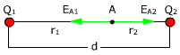
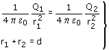
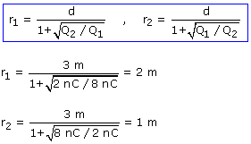

a)
El campo se anulará en un punto A, situado en la línea que une las cargas y entre ambas. La posición del punto se determina utilizando la igualdad de módulos


En la expresión del módulo las cargas se ponen sin signo

El campo se anula a 2 m de Q1 y a 1 m de Q2